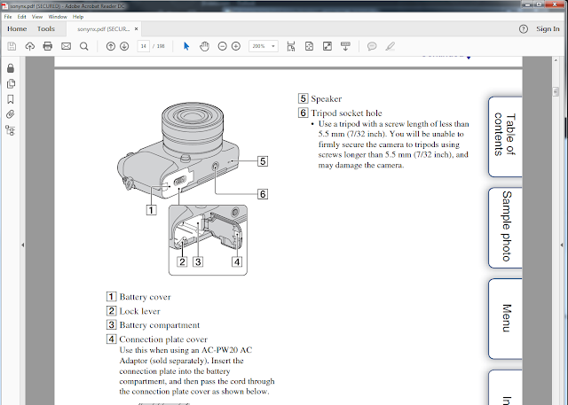
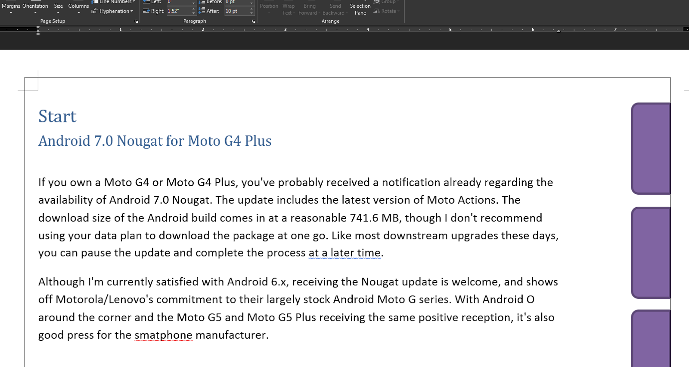
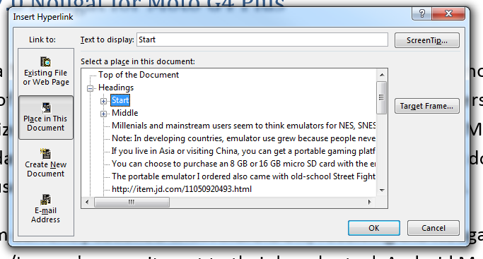
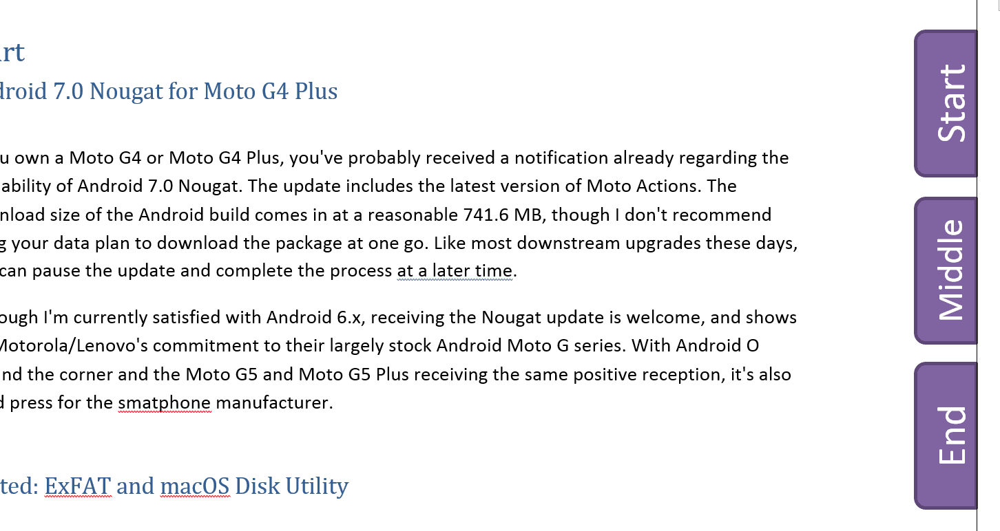
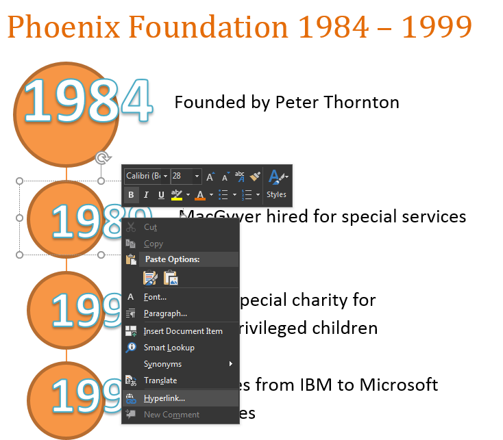

Creating Navigation Notebook Tabs for PDFs from Word¶
Although it’s somewhat redundant to add “hotspots” in PDFs, some technical writers use visual navigation aides in their publications because it’s attractive and is easier to use on tablets and 2-in-1 laptops than text hyperlinks where you have to zoom in.
You don’t need Microsoft Publisher, InDesign, or CorelDraw to produce PDFs with visual navigation cues. Microsoft Word has long had the ability to add these fairly basic components to your Word document and retain them once they are exported to PDF.
Note
Image hotspots and interactive links in PDFs have been around as long as HTML 1.x. As noted, they can be useful for PDFs if the document is delivered and consumed via touch screen devices. For my part, I still prefer ordinary text hyperlinks, but I understand the resurgence of its use considering that today’s generation of users think everything on a screen is designed to be tapped by a finger.
This article uses Microsoft Word 2016 to produce a document with classic “notebook tabs” (similar to the Sony NEX manual shown previously) that supplement the Bookmarks and the Table of Contents of the final output PDF.
To create a PDF with clickable notebook tabs:
For the purpose of this article, a page border is added to assist layout. The page border will be visible in the final PDF output.
Click Design > Page Borders to add a page border.
Adjust the margins of the document.
Since this example has the notebook tabs on the right, the Right Margin was adjusted to 0.17” which is the smallest margin a standard Word document will support.
Click Layouts > margins > Custom Margins to adjust the margin values.
Note
You can certainly force Word to have a smaller margin but this may push the objects and text outside the page borders in the resulting PDF.
Add the notebook tabs.
Click Insert > Shapes to add shapes to the document. Click the handles to rotate them in the proper direction.
For this article, the shapes that will be used as notebook tabs are aligned to the page border.
To duplicate a shape, select the shape, and then click CTRL+D.
To align the shapes, select the shapes, and then click Layout > Align > Distribute Vertically and if needed, Align > Align Right.
Create a Paragraph style which allows for space between the text and the notebook tabs.
For this example, the Normal paragraph style’s right Ruler marker was dragged to 6.5. With the ruler marker on 6.5, the text won’t overlap with the added shapes.
Add and format the text inside the notebook tabs. If needed, use large text sizes to ensure that the tabs can be tapped in the output PDF when viewed on a tablet or 2-in-1 PC.
For this example, Start, Middle, and End were added inside the notebook tabs.
Add the hyperlinks to the text inside the notebook tabs.
Select and right-click the text. Click Hyperlink > Place in this Document. For this example, there are Heading 1 text for Start, Middle, and End in the document.
If needed, change the format of the links. Once exported to PDF, the final appearance of the links on the Word document appears on the PDF as well.
Tip
Try not to test the links in Word since the colors will change and the changed color will appear on the output PDF.
If needed, select the notebook tabs and then paste them on other pages of the document.
You can group the notebook tabs by selecting the shapes and click Group on the Drawing Tools > Format tab.
Export the document as PDF. Click File > Create PDF/XPS.
If you want the notebook tabs to be the primary navigation method on the PDF, click Options and clear the Create bookmarks using Headings checkbox. This prevents Word from creating a navigation bookmark tree for the PDF.
Open the PDF in a PDF viewer such as Adobe Acrobat and test the hyperlinks to the different parts of the document.
The notebook tab links created in Word in this article were tested to work with Xodo PDF Reader for Android and Adobe Reader for Windows 7/10, Android, and Windows 10 Mobile.
Timelines¶
You can use the text hyperlink as a visual navigation on PDFs in a variety of designs, such as in timelines. The same principles apply. By adding shapes and making sure they don’t intrude in the text, you can creatively employ the document links to navigate through a long PDF.
In the following example, a company timeline illustration clicks to a different page describing the event for a particular year. Note that the Text Art inside the spheres are large enough so readers can easily tap on them on 5”-14” tablets, smartphones, and 2-in-1 PCs like the Lenovo Yoga and Surface Pro 4.
